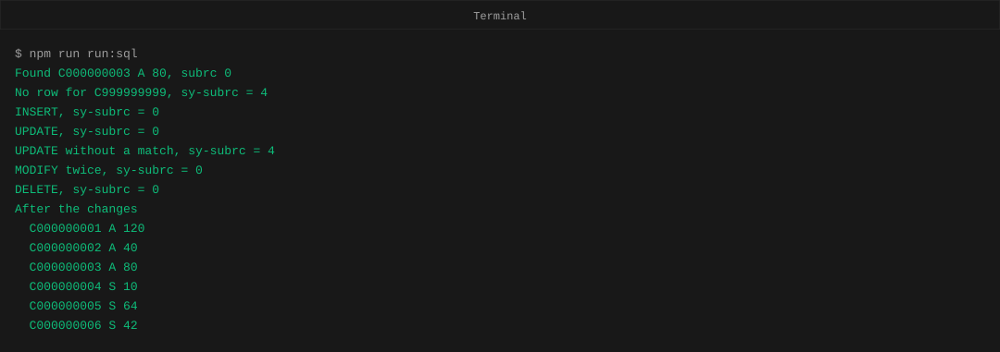
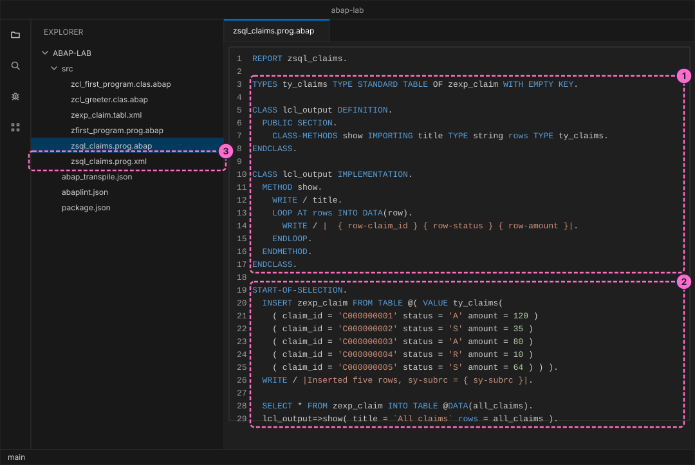
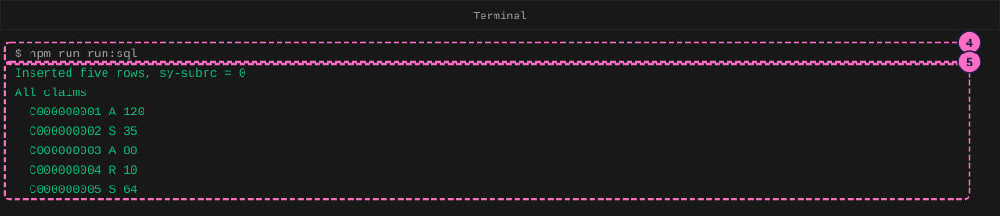
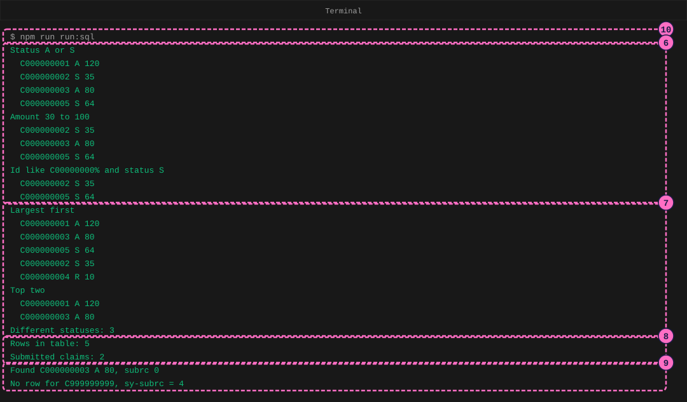
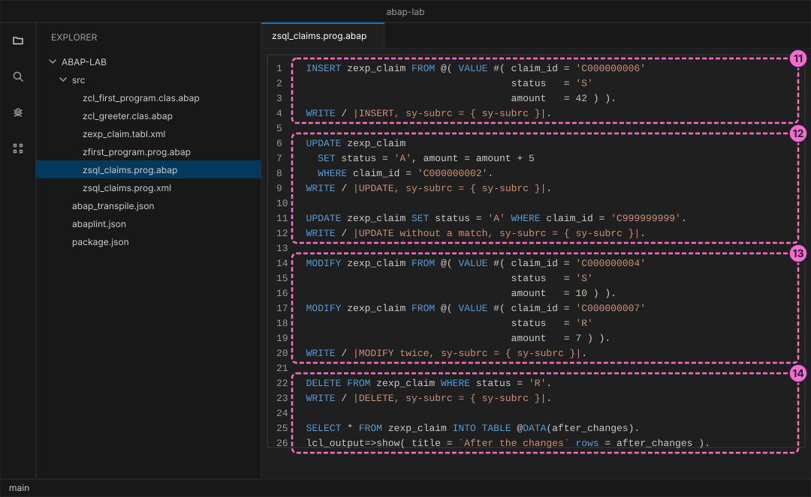
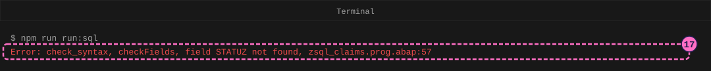
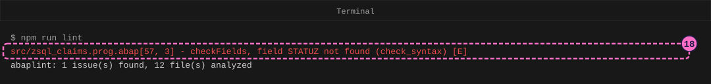

ABAP Guide: ABAP SQL on a Local Database
|
This content was generated with the assistance of AI and should be verified against the official documentation before being relied on in production. |
Checked on 2026-11-13 against open-abap 2.14.30 (the abaplint transpiler and runtime, with open-abap-core a9acc41), abaplint 2.120.103 and Node.js 24.21.
What you build
You write one report named zsql_claims that works on a database table of expense claims. It inserts five rows, reads them back in several ways (all rows, filtered rows, sorted rows, the two largest, a count, a single row) and then changes the table with INSERT, UPDATE, MODIFY and DELETE. After each statement you read the result that the program prints, and at the end you make a deliberate spelling mistake and read the error message.
The table is zexp_claim, the table that the ABAP lab already holds in src/zexp_claim.tabl.xml. The lab table is a reduced version of the full claim table used in the reference pages: it has only three columns, claim_id (the key, ten characters), status (one character: A approved, S submitted, R rejected) and amount (a whole number). Behind it the lab keeps a small in-memory SQLite database. Nobody has to install or configure it: the lab creates it, empty, every time a program starts.
The playground is open-abap, a community open-source project, not SAP software. It runs only the part of ABAP SQL that it implements, so this guide uses only statements that were run in it. Results on a real SAP system follow the same rules, but check a program there before you rely on it. Output is written with WRITE, the classic list statement, because that is what the playground offers.

Before you start
-
No account is needed: Node.js, the abaplint tools and open-abap install from the public npm registry without signing in. The licences you accept by installing (MIT for the abaplint packages) are listed in the README of the ABAP lab.
-
Set up the lab first, with the guide Set Up a Local ABAP Playground: the folder
abap-labwithnpm installdone, and an editor such as Visual Studio Code open on it. Do the guide Your First ABAP Program too, so that a report, aWRITEstatement and the terminal commands are familiar. -
The lab already holds the finished file of this guide,
modules/ROOT/examples/abap-lab/src/zsql_claims.prog.abap. Type it yourself, block by block, rather than copying it. -
Read ABAP SQL: Reading Data and ABAP SQL: Writing Data if you want the reasons behind each statement. This guide only runs them.
-
The figures are drawings of the editor and the terminal, not screenshots. A highlighted box with a number marks the part of the figure that belongs to the step with the same number.
Steps
Two ideas help from the first line. An ABAP SQL statement is a normal ABAP statement that talks to the database, such as SELECT. A variable that you use inside it is written with a leading @, for example @DATA(all_claims): the @ tells ABAP that the name is a variable of your program and not a column of the table. After every statement the system field sy-subrc tells whether it worked: 0 means success, 4 means that nothing matched or the row could not be written.
Write the report and load the table
-
In the
srcfolder createsrc/zsql_claims.prog.abap. Start with theREPORTline, a table type for rows ofzexp_claim, and a small local classlcl_outputwhose methodshowprints a title and then one line per row. You will call it after every read, so the guide does not repeat the loop.REPORT zsql_claims. TYPES ty_claims TYPE STANDARD TABLE OF zexp_claim WITH EMPTY KEY. CLASS lcl_output DEFINITION. PUBLIC SECTION. CLASS-METHODS show IMPORTING title TYPE string rows TYPE ty_claims. ENDCLASS. CLASS lcl_output IMPLEMENTATION. METHOD show. WRITE / title. LOOP AT rows INTO DATA(row). WRITE / | { row-claim_id } { row-status } { row-amount }|. ENDLOOP. ENDMETHOD. ENDCLASS. -
Add the program’s start block.
INSERT zexp_claim FROM TABLEwrites all the rows of an internal table in one statement, and the@( VALUE ty_claims( ... ) )expression builds that table from five lines. The type name must be written out here (ty_claims, not#).SELECT * FROM zexp_claim INTO TABLEthen reads every row into the new tableall_claims, andshowprints it.START-OF-SELECTION. INSERT zexp_claim FROM TABLE @( VALUE ty_claims( ( claim_id = 'C000000001' status = 'A' amount = 120 ) ( claim_id = 'C000000002' status = 'S' amount = 35 ) ( claim_id = 'C000000003' status = 'A' amount = 80 ) ( claim_id = 'C000000004' status = 'R' amount = 10 ) ( claim_id = 'C000000005' status = 'S' amount = 64 ) ) ). WRITE / |Inserted five rows, sy-subrc = { sy-subrc }|. SELECT * FROM zexp_claim INTO TABLE @DATA(all_claims). lcl_output=>show( title = `All claims` rows = all_claims ). -
Create the attribute file
src/zsql_claims.prog.xmlnext to it, the same kind of file as for the first program:<?xml version="1.0" encoding="utf-8"?> <abapGit version="v1.0.0" serializer="LCL_OBJECT_PROG" serializer_version="v1.0.0"> <asx:abap xmlns:asx="http://www.sap.com/abapxml" version="1.0"> <asx:values> <PROGDIR> <NAME>ZSQL_CLAIMS</NAME> <SUBC>1</SUBC> <RLOAD>E</RLOAD> <UCCHECK>X</UCCHECK> </PROGDIR> </asx:values> </asx:abap> </abapGit>
-
Add a script to the
scriptssection ofpackage.jsonthat transpiles and then runs the report. The&&makes the run stop when the transpile fails, so you never run an old build by mistake (the lab’s ownpackage.jsonalready has it):"run:sql": "npm run transpile && node output/project/zsql_claims.prog.mjs"Then run it in the terminal, in the
abap-labfolder:npm run run:sql -
Read the output. The transpiler first prints a few lines about the files it found; the figures leave them out. Then come the lines of your program:
sy-subrc = 0after theINSERT, the titleAll claimsand the five rows. Each row line shows the claim id, the status and the amount.Inserted five rows, sy-subrc = 0 All claims C000000001 A 120 C000000002 S 35 C000000003 A 80 C000000004 R 10 C000000005 S 64
Read rows with SELECT
Every block below goes at the end of the file, after the previous one, inside the start block (two spaces of indentation, as in the figures). The program reads the same five rows again and again; only the condition changes.
-
Filter with
WHERE. The first read keeps the rows whose status is in a list (IN), the second the rows whose amount lies between two limits (BETWEEN, which includes both limits), the third the rows whose id starts with a given text (LIKE, where%stands for any characters) and whose status isS.SELECT * FROM zexp_claim WHERE status IN ( 'A', 'S' ) INTO TABLE @DATA(status_a_or_s). lcl_output=>show( title = `Status A or S` rows = status_a_or_s ). SELECT * FROM zexp_claim WHERE amount BETWEEN 30 AND 100 INTO TABLE @DATA(mid_range). lcl_output=>show( title = `Amount 30 to 100` rows = mid_range ). SELECT * FROM zexp_claim WHERE claim_id LIKE 'C00000000%' AND status = 'S' INTO TABLE @DATA(like_rows). lcl_output=>show( title = `Id like C00000000% and status S` rows = like_rows ). -
Sort and limit.
ORDER BY amount DESCENDINGputs the largest amount first,UP TO 2 ROWSstops after two rows (so the two largest), andSELECT DISTINCTreturns each different status once.lines( )is a built-in function that returns the number of rows of a table.SELECT * FROM zexp_claim ORDER BY amount DESCENDING INTO TABLE @DATA(largest_first). lcl_output=>show( title = `Largest first` rows = largest_first ). SELECT * FROM zexp_claim ORDER BY amount DESCENDING INTO TABLE @DATA(top_two) UP TO 2 ROWS. lcl_output=>show( title = `Top two` rows = top_two ). SELECT DISTINCT status FROM zexp_claim ORDER BY status INTO TABLE @DATA(statuses). WRITE / |Different statuses: { lines( statuses ) }|. -
Count rows with
COUNT( * ), once for the whole table and once with aWHEREcondition. The result is one number, read into an inline-declared variable.SELECT COUNT( * ) FROM zexp_claim INTO @DATA(total). WRITE / |Rows in table: { total }|. SELECT COUNT( * ) FROM zexp_claim WHERE status = 'S' INTO @DATA(submitted). WRITE / |Submitted claims: { submitted }|. -
Read one row with
SELECT SINGLE. It fills a structure instead of a table. The first read finds claimC000000003, the second asks for a claim that does not exist, sosy-subrcis 4 and the structure keeps its old content.SELECT SINGLE * FROM zexp_claim WHERE claim_id = 'C000000003' INTO @DATA(claim). WRITE / |Found { claim-claim_id } { claim-status } { claim-amount }, subrc { sy-subrc }|. SELECT SINGLE * FROM zexp_claim WHERE claim_id = 'C999999999' INTO @claim. WRITE / |No row for C999999999, sy-subrc = { sy-subrc }|. -
Run
npm run run:sqlagain and read the new lines after the first listing. Every group of lines belongs to one step: the threeWHEREreads, the sorted reads and the number of different statuses, the two counts, and the single-row reads.
The figure leaves out the first lines of the output, which you saw in step 5. Look at the results: status
AorSleaves four rows (the rejected claim is gone), amounts from 30 to 100 leave three rows, the id pattern together with statusSleaves two, the largest amount is 120, the two largest are 120 and 80, the table holds three different statuses, five rows in all and two submitted claims.
Change rows with INSERT, UPDATE, MODIFY and DELETE
The next four blocks change the table. They run in this order, and each one reports sy-subrc.
-
INSERTadds one row. The row is built withVALUE #( ... ), and the#is allowed here because the target table fixes the type. -
UPDATEchanges rows that match aWHEREcondition. The first statement sets the status of claimC000000002toAand raises its amount by 5 (amount = amount + 5, so 35 becomes 40). The second asks for a claim that does not exist: nothing changes andsy-subrcis 4. -
MODIFYwrites a row whether or not it exists: a row with an existing key is replaced, a row with a new key is inserted. The firstMODIFYreplaces claimC000000004(its status changes fromRtoS), the second inserts a new claimC000000007with statusR. -
DELETE FROMremoves the rows that match its condition. Only claimC000000007still has statusR(theMODIFYchanged claim 4), so only it disappears. A lastSELECTlists the table.INSERT zexp_claim FROM @( VALUE #( claim_id = 'C000000006' status = 'S' amount = 42 ) ). WRITE / |INSERT, sy-subrc = { sy-subrc }|. UPDATE zexp_claim SET status = 'A', amount = amount + 5 WHERE claim_id = 'C000000002'. WRITE / |UPDATE, sy-subrc = { sy-subrc }|. UPDATE zexp_claim SET status = 'A' WHERE claim_id = 'C999999999'. WRITE / |UPDATE without a match, sy-subrc = { sy-subrc }|. MODIFY zexp_claim FROM @( VALUE #( claim_id = 'C000000004' status = 'S' amount = 10 ) ). MODIFY zexp_claim FROM @( VALUE #( claim_id = 'C000000007' status = 'R' amount = 7 ) ). WRITE / |MODIFY twice, sy-subrc = { sy-subrc }|. DELETE FROM zexp_claim WHERE status = 'R'. WRITE / |DELETE, sy-subrc = { sy-subrc }|. SELECT * FROM zexp_claim INTO TABLE @DATA(after_changes). lcl_output=>show( title = `After the changes` rows = after_changes ).
The figure shows these four blocks only, the end of the file.
-
Run
npm run run:sql. The last lines of the output showsy-subrcfor each change (0 for every statement that found its row, 4 for the update without a match) and the table after the changes: six rows, claim 2 nowA 40, claim 4 nowS 10, the new claim 6, and no claim 7.
Read your first error
Errors are normal. You make one on purpose, where you know the fix. The complete file at this point has the same blocks as the lab file, without its tag comment lines.
-
Open
src/zsql_claims.prog.abapand, in theSELECT DISTINCTstatement of step 7, changestatusin the field list (the word right afterDISTINCT) tostatuz. Save the file. -
Run
npm run run:sql. The transpiler checks the program before it translates anything, stops at the first problem and prints the message; Node.js does not run. The message has four parts:check_syntaxis the check that failed,checkFields, field STATUZ not foundsays that the table has no such column, andzsql_claims.prog.abap:57is the file and the first line of the statement. A few more lines about the transpiler’s own code follow; ignore them.
-
Run
npm run lintto ask abaplint, the static checker of the lab, about the same file. It finds the same problem. The finding readsfile[line, column] - message (rule) [severity]: line 57, column 3 is where the statement starts,check_syntaxis the rule, and[E]means error.npm run lint
-
Change
statuzback tostatus, save and runnpm run run:sql. The output returns, andnpm run lintreports0 issue(s) found.
Check the result
npm run run:sql ends without an error. Its output begins with Inserted five rows, sy-subrc = 0 and the five rows, contains the read groups of step 10, and ends with After the changes and these six rows:
C000000001 A 120
C000000002 A 40
C000000003 A 80
C000000004 S 10
C000000005 S 64
C000000006 S 42npm run lint prints abaplint: 0 issue(s) found, and npm test still passes with the lab’s own test class. Run npm run run:sql a second time: the output is the same, because the database starts empty on each run.
Variations
-
Change a condition and predict the rows before you run:
WHERE amount > 60,WHERE status <> 'A'orORDER BY claim_id DESCENDING. -
Change
UP TO 2 ROWSto another number, or removeORDER BYfrom that read and notice that without it the database decides which rows come first. -
Change the key of the first
MODIFYto a claim that does not exist yet and read the table again: the row is inserted instead of replaced.
What can go wrong
| Symptom | Cause | Fix |
|---|---|---|
|
A column name in the field list of a |
Open the file and the line named at the end of the message and correct the name. |
A read prints its title but no rows, and neither the transpiler nor |
A column name in the |
When a list is empty although rows exist, read the condition and compare each name with the table. |
|
|
Use a new key, or use |
|
In the lab, |
Write the type name: |
The old output appears although you changed the code |
You ran |
Run |
Where to go next
-
Previous guide: Your First ABAP Program.
-
Reference: ABAP SQL: Reading Data, which also covers
GROUP BY, sums and averages,sy-dbcntandFOR ALL ENTRIES(the playground does not run the first three, so they are not part of this guide). -
Reference: ABAP SQL: Writing Data.
-
Reference: Database Tables and Structures, for the full claim table that the lab’s table reduces.